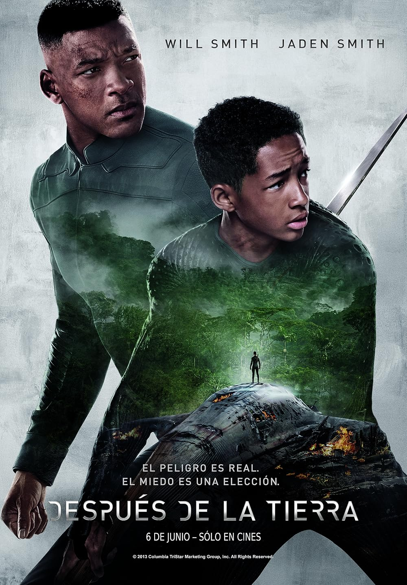
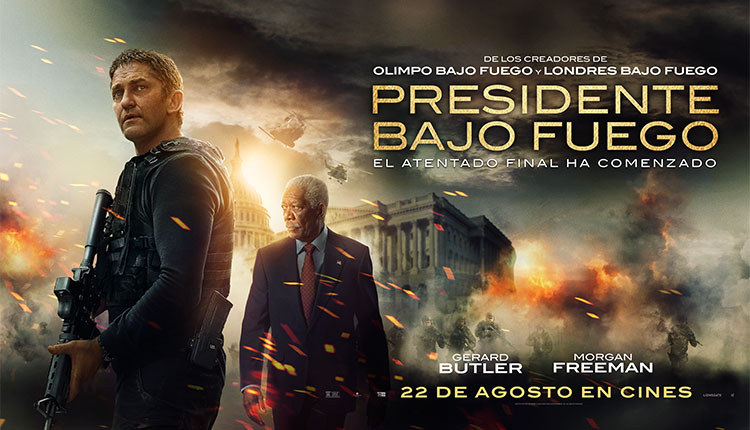

Dos detectives de Miami se enfrentan a un peligroso cartel de drogas
que amenaza la ciudad. Entre explosiones, persecuciones y mucho humor,
Mike y Marcus pondrán a prueba su amistad mientras arriesgan todo para
detener al enemigo.
Director:Michael Bay
Año:2003
Género:Acción y comedia
Duración:2 horas y 27 minutos
Tráiler
AUDIO
2.- DESPUES DE LA TIERRA

Un aterrizaje forzoso deja a Kitai Raige y su padre Cypher varados
en la Tierra, 1000 años después de los acontecimientos que forzaron
a la humanidad a huir.
Director:M. Night Shyamalan
Año:2013
Género:Ciencia ficción, acción y aventura
Duración:1 hora 40 min
Tráiler
AUDIO
3.- COMO SI FUERA LA PRIMERA VEZ
Henry Roth es un hombre que evita compromisos amorosos hasta que conoce a
Lucy, una chica encantadora de la que se enamora profundamente. Sin embargo,
Lucy sufre una pérdida de memoria a corto plazo y olvida cada día lo que vivió
el anterior. Henry decide conquistarla todos los días, demostrando que el amor
verdadero puede superar cualquier obstáculo. ❤️
Director:Peter Segal
Año:2004
Género:Comedia romántica
Duración:96–99 minutos
Tráiler
AUDIO
4.- PRESIDENTE BAJO FUEGO

Mike Banning, agente del Servicio Secreto, es acusado injustamente de
un atentado contra el presidente de los Estados Unidos. Convertido en
fugitivo, deberá huir de las autoridades y descubrir quién está detrás
de la conspiración para limpiar su nombre y salvar al presidente. 🔥🎯